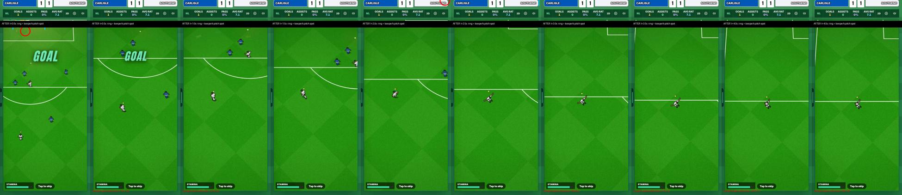
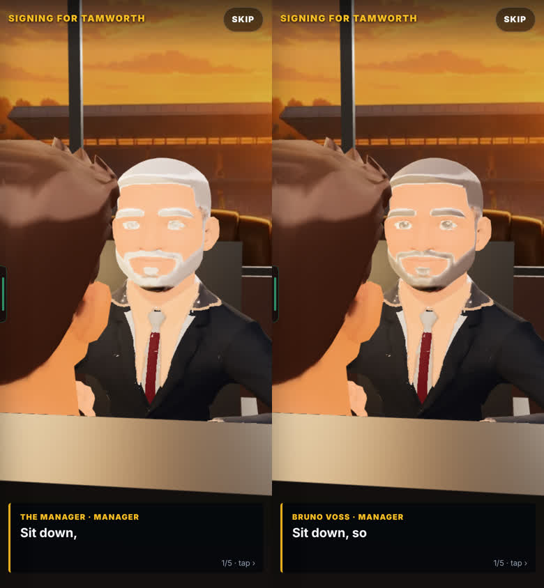
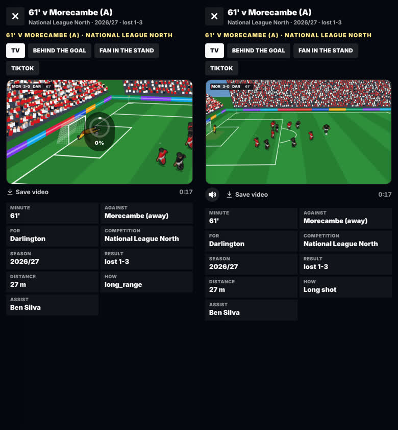

Overnight build: results
Leo · 25 Oct 2026 · 7 chats, each on its own branch · nothing in the game until you pick
Each part below is on its own branch, behind your 24 Oct switch, and is not in the game yet. Reply with the numbers you want in (e.g. "1, 2, 4, 6, 7"), and I'll join them, check them and put them on the site behind the switch. Late start: the jobs reached the chats at 12:28 UTC (the hub chat restarted and lost about 10 hours), so this ran today.
About the clips: real play only, filmed from a production build. Marked 🔊 = the game's own sound. The two goal clips in part 3 are filmed with the new frame-by-frame recorder (no repeated frames); the rest are still screen recordings, so on those the ball can still look a little jumpy. Sandbox: no database, so players and badges are invented.
1 · Celebrations: nobody on top of you
Anyone near your run to the corner now steps aside before you reach him, live and in goal videos. The keeper stays on his spot.



Swipe for more → · tap a video for full screen
- MeasuredOn 14 real goal recordings: before, 4 had someone within 0.8 m of you (closest 0.23 m), touching for up to 0.2 s. After: closest 1.60 m, touching 0 s.
- 15 goals checked by eyeAll six moves right; tap to skip clears in 0.02–0.09 s; the keeper stays on his spot; the camera follows you (it stops at the pitch edge near the touchline).
- Two ideas, not built (your call)1) Everyone else stands frozen for the 5 s celebration: team-mates could jog over and opponents walk away. 2) From long range the 2 s run ends near the box, not the corner: a longer run for far-out goals.
2 · Social feed: smooth on a slow phone
Your goal's post now always has its video: 48% → 100% of 200 simulated matches you scored in.
Production build, 150 posts, hiccup = a pause over 0.1 s. Measured. At 6× slow: 0–6 hiccups across 3 runs (was 39), worst 0.12 s, so not met every time.
Swipe for more → · tap a video for full screen
- What was slowThe browser drawing each post as it comes near (style, paint, layout); a frosted-glass blur on the video button and tab bar was the worst. With the fast feed on those are solid colours (they look nearly the same).
- Your choiceSmooth every time on the slowest phones needs simpler posts (fewer effects). That changes the look, so not done.
3 · Clips that look like the game filming only
Why the ball looked jumpy in our clips: the test machine repeated about 1 frame in 6 while recording. Now the game moves one frame at a time while filming and every frame is captured, with the sound on the same clock. No game code changed.
Measured over the shot and the run, and over the whole clip by me (283 and 279 frames, 0 repeats).
Swipe for more → · tap a video for full screen
4 · Weather in real matches new switch part
Rain, wind and each home club's pitch in career matches, from the match date. Shown on the team sheet ("Rain · poor, wet pitch", "Windy 12 m/s"), drawn lightly in the match, with a wind arrow. Its own toggle under your switch; off = no change (12 of 12 ball checks identical).
Your side's goals a match 2.37 → 2.41–2.44 (+1.6% to +2.8%); passes completed 90.5% → 90.9–91.0%. 1,500 whole matches per row, new ball, measured. Old ball: goals −0.2% to +0.5%. Nothing near 10%, so nothing toned down.

Swipe for more → · tap a video for full screen
- For HarryMatch engine files not changed. The match screen gets 1 small block that draws the weather; page.tsx 1 line. Your and Harry's call before it goes in.
- Not doneTeam-mates' guesses of the ball path and the unseen 90 minutes ignore the weather. Wind bending is hard to see at the match camera.
5 · Real Goals, ready for players test page
All 8 paths played on a phone slowed 4×: 35 levels, 30 scored by the bot (the 5 misses were the bot, not the game), stars kept after reload on 8 of 8 paths, 0 page errors. Paths open in 0.9–3.2 s, a level in 0.7–2.4 s.
Swipe for more → · tap a video for full screen
- FixedAfter 6 shots at one goal the level got stuck on a "FULL TIME" card (now restarts every 5 tries). A miss showed three bright white stars (now grey outlines).
- Plan for players (your call)A "⚽ Real Goals" row on the title screen with your streak; needs Harry's yes on two things first; about a day of work after that. In docs/handoffs/2026-10-25-leo-overnight/chat5/PLAN-real-goals-for-players.md.
- For Harry, not fixedThe realGoals test fails only because 3 sentences in Harry's 0.101h notes name the removed data source. Today's daily starts with the shooter almost off the screen edge (match camera).
6 · End of season, solid
Swipe for more → · tap a video for full screen
- White screenNever came back in 10 full runs (170 stills checked). Probably the screenshot catching the 3D room loading; no fix needed so far.
- Silent cheers, fixedThe awards night was silent unless you had played a match since opening the app. Now it cheers at all 5 names.
- Season video sound, fixed (measured, not heard)No clipping; the crowd roar 8 dB over the music (was 1.8 dB); sound and picture in step (drifted up to 0.07 s).
- Lighter awards nightThe same picture with about 30% less work per frame. The real speed needs a cheap Android phone to judge.
- Your callThe awards night is about 17 dB quieter than the season video: louder? The Ballon d'Or night has the same silent-cheer gap (Harry's file).
7 · Bug hunt, round 2: 13 found, 4 fixed
2 full seasons with your switch on, 1 with it off (plays as before), 10 refreshes (nothing lost), back and Escape on every new screen.



Swipe for more → · tap a video for full screen
- Also fixedEscape closes the goal sheet.
- Found, not fixed (others' areas or design)Phone back button leaves the game from every screen; a mid-match refresh loses the match (Harry); 3D runs out of graphics contexts after Ballon d'Or → signing → awards night (Harry); the Star Pass pop-up can't be closed (Mikey); the talks opening wage changes between visits (Mikey); plus 4 small ones.
Big-moment banner: none
You picked none. Being removed on the celebrations branch; heartbeat, crowd and slow motion stay.
Not checked
- Nothing was tried on a real phone or heard by ear (sound is measured). No real squads in the sandbox. The 3D celebration is still being filmed.
Checks (measured)
Every branch: type-check clean, one-engine guard clean, its area's star tests pass, production build passes. The 9 star test files that fail, fail the same way on main (Harry's chance and camera work, and the realGoals wording). Branches: leo-celebrations, leo-feed, leo-bicycle (filming tools), leo-weather, leo-realgoals, leo-season-end, leo-bughunt.